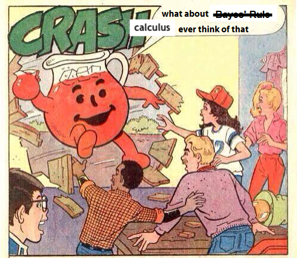

source("../dsan-globals/_globals.r")Week 10: Parameter Estimation
DSAN 5100: Probabilistic Modeling and Statistical Computing
Section 03
Class Sessions
Estimating Parameters
- Maximum Likelihood Estimation (MLE)
- Generalized Method of Moments (GMM) Estimation
\[ \DeclareMathOperator*{\argmax}{argmax} \DeclareMathOperator*{\argmin}{argmin} \newcommand{\bigexp}[1]{\exp\mkern-4mu\left[ #1 \right]} \newcommand{\bigexpect}[1]{\mathbb{E}\mkern-4mu \left[ #1 \right]} \newcommand{\definedas}{\overset{\text{defn}}{=}} \newcommand{\definedalign}{\overset{\phantom{\text{defn}}}{=}} \newcommand{\eqeventual}{\overset{\text{eventually}}{=}} \newcommand{\Err}{\text{Err}} \newcommand{\expect}[1]{\mathbb{E}[#1]} \newcommand{\expectsq}[1]{\mathbb{E}^2[#1]} \newcommand{\fw}[1]{\texttt{#1}} \newcommand{\given}{\mid} \newcommand{\green}[1]{\color{green}{#1}} \newcommand{\heads}{\outcome{heads}} \newcommand{\lik}{\mathcal{L}} \newcommand{\loglik}{\ell} \newcommand{\mle}{\textsf{ML}} \newcommand{\orange}[1]{\color{orange}{#1}} \newcommand{\outcome}[1]{\textsf{#1}} \newcommand{\param}[1]{{\color{purple} #1}} \newcommand{\pgsamplespace}{\{\green{1},\green{2},\green{3},\purp{4},\purp{5},\purp{6}\}} \newcommand{\prob}[1]{P\left( #1 \right)} \newcommand{\purp}[1]{\color{purple}{#1}} \newcommand{\spacecap}{\; \cap \;} \newcommand{\spacewedge}{\; \wedge \;} \newcommand{\tails}{\outcome{tails}} \newcommand{\Var}[1]{\text{Var}[#1]} \newcommand{\bigVar}[1]{\text{Var}\mkern-4mu \left[ #1 \right]} \]
Maximum Likelihood Estimation
- Creating a model \(\mathcal{M}\) w/parameters \(\param{\theta}\) means specifying
\[ \mathcal{M} = \Pr(\underbrace{x_1, \ldots, x_n}_{\text{Observed Data}} \mid \underbrace{\param{\theta}}_{\text{Model Parameters}}) \]
- When we view this as a function of \(\param{\theta}\), given the observed data, we call it the likelihood function \(\mathcal{L}_{\mathcal{M}}(\param{\theta} \mid x_1, \ldots, x_n)\)
- Read this as “the likelihood that our model \(\mathcal{M}\), with parameters \(\param{\theta}\), produced the data \(x_1, \ldots, x_n\)”
Probability Models are Generative Models
- A given choice of model parameters \(\param{\theta}\) can be used to generate simulated datapoints!
- Simple example: \(X \sim \text{Bern}(\param{p})\). Just one parameter, \(\param{\theta} = \{\param{p}\}\)
- We observe 10 coin flips: 8 heads, 2 tails. Of all possible Bernoulli distributions (parameterized by \(\param{p}\)), which is most likely to generate this data?
Generative Models
Given a choice of \(\param{\theta}\), we can generate simulated datasets (here 10 for each labeled value of \(\param{p}\)), then compute likelihood as proportion of datasets with 8 heads, 2 tails
From plot: (Among these vals) \(\param{p} = 0.8\) is maximum likelihood estimate
library(tibble)
library(ggplot2)
library(dplyr)
set.seed(1948)
obs_heads <- 8
num_flips <- 10
num_reps <- 10
p_vals <- c(0.01, 0.2, 0.4, 0.6, 0.8, 0.99)
obs_matches <- c()
for (i in 1:length(p_vals)) {
cur_p <- p_vals[i]
theta_str <- sprintf("%.2f", cur_p)
sim_data <- replicate(
num_reps,
rbinom(num_flips, 1, cur_p)
)
#print(sim_data)
#data_str <- paste0(sim_data, collapse=", ")
num_heads <- colSums(sim_data)
#print(num_heads)
num_matches <- sum(num_heads == obs_heads)
obs_matches <- c(obs_matches, num_matches)
#print(num_matches)
#print(num_heads)
num_tails <- num_flips - num_heads
#print(num_tails)
data_strs <- paste0("[",num_heads," heads, ",num_tails," tails]")
data_str <- paste0(data_strs, collapse=", ")
#writeLines(paste0("p = ",theta_str,": ",data_str))
}
#print(obs_matches)
result_df <- tibble(p=as.character(p_vals), num_matches=obs_matches)
result_df <- result_df %>% mutate(prop_matches = obs_matches / num_reps)
ggplot(result_df, aes(x=p, y=prop_matches)) +
geom_bar(stat = 'identity', fill=cb_palette[1]) +
dsan_theme("quarter") +
# theme(
# axis.title.y = element_text(size = 12)
# ) +
labs(
title = "Likelihood of data (8 heads, 2 tails) given p",
y = "Proportion of times (8,2) generated"
)
Week 10 Lab!
Simulations \(\rightarrow\) Math
Prev example was overkill: we can solve for optimal \(\param{p}\) value…
\[ \begin{align*} p^* &\overset{\phantom{x_i\text{ indep}}}{=} \argmax_{\param{p}} \mathcal{L}(x_1, \ldots, x_n \mid \param{p}) \\ &\overset{x_i\text{ indep}}{=} \argmax_{\param{p}} \mathcal{L}(x_1 \mid \param{p})\mathcal{L}(x_2 \mid \param{p}) \cdots \mathcal{L}(x_n \mid \param{p}) \end{align*} \]
- What are the individual \(\mathcal{L}(x_i \mid \param{p})\) terms?
- How do we maximize the product \(\mathcal{L}(x_1 \mid \param{p}) \cdots \mathcal{L}(x_n \mid \param{p})\)?
Math Magic 1
What are the individual \(\Pr(x_i \mid \param{p})\) terms?
\(X \sim \text{Bern}(\param{p})\), so
\[ \begin{align*} \Pr(X = x_i \mid \param{p}) &= \begin{cases}1 - \param{p} & x_i = 0 \\ \param{p} & x_i = 1\end{cases} \; \leftarrow \genfrac{}{}{0pt}{}{\text{ Non-differentiable}}{üò≠} \\ &\overset{\text{math}}{\underset{\text{magic}}{=}} (1-\param{p})^{1-x_i}\param{p}^{x_i} \; \leftarrow \text{ Differentiable! üò≤} \end{align*} \]
Why do we need it to be differentiable? Stay tuned…
Math Magic 2
How do we maximize the product?
\[ p^* = \argmax_{\param{p}} f(\param{p}) \implies f'(p^*) = 0 \]
To maximize likelihood, we need to find its derivative1, set equal to 0, and solve:

\[ \begin{align*} &\frac{d}{d\param{p}}\lik(x \mid \param{p}) = 0 \iff \\ &\frac{d}{d\param{p}}\left[\lik(x_1 \mid \param{p})\lik(x_2 \mid \param{p})\cdots \lik(x_n \mid \param{p})\right] = 0 \end{align*} \]
Obstacle: Products vs. Sums
- Finding \(\frac{d}{d\param{p}}\left[ \lik(x_1)\lik(x_2)\cdots \lik(x_n)\right]\) is a doozy, even with just \(n = 2\) datapoints:
\[ \begin{align*} &\frac{d}{d\param{p}}\left[ \lik(x_1)\lik(x_2) \right] = \left( \frac{d}{d\param{p}}\lik(x_1)\right) \cdot \lik(x_2) + \lik(x_1)\cdot \left( \frac{d}{d\param{p}}\lik(x_2) \right) \\ &= (1-\param{p})^{-x_1}\param{p}^{x_1-1}(x_1-\param{p})\cdot (1-\param{p})^{1-x_2}\param{p}^{x_2} \\ &+ (1-\param{p})^{1-x_1}\param{p}^{x_1} \cdot (1-\param{p})^{-x_2}\param{p}^{x_2-1}(x_2 - \param{p}) %&= \frac{d}{d\theta}\left[ (1-p)^{1-x_1}p^{x_1}(1-p)^{1-x_2}p^{x_2} \right] \end{align*} \]
- Complicating factor: \(\lik(x_i)\) terms are all multiplied together, forcing us to use product rule: \(\frac{d}{d\param{p}}\left[\lik(x_1)\lik(x_2)\right] = \left(\frac{d}{d\param{p}}\lik(x_1)\right)\cdot \lik(x_2) + \lik(x_1)\cdot \left(\frac{d}{d\param{p}}\lik(x_2)\right)\)
- If we had terms that were added rather than multiplied, we’d have a much easier time: \(\frac{d}{d\param{p}}\left[ \lik(x_1) + \lik(x_2)\right] = \frac{d}{d\param{p}}\lik(x_1) + \frac{d}{d\param{p}} \lik(x_2)\)2
- So, what math operation do we know that turns multiplications into additions?
Math Magic 3: Log-Likelihood
\[ \log(a\cdot b) = \log(a) + \log(b) \]
Bingo! So, can we maximize \(\loglik(x_i) = \log(\mathcal{L}(x_i))\) rather than \(\mathcal{L}(x_i)\)? Bingo again! Because logarithms are monotonic,
\[ x^* = \argmax_x \left[ \log\left(f(x)\right) \right] \iff x^* = \argmax_x \left[ f(x) \right] \]
So, we can just solve
\[ p^* = \argmax_{\param{p}} \left[ \ell(x_1, \ldots, x_n)\right] \]
Simplifying
Our problem simplifies to figuring out
\[ \begin{align*} \frac{d}{d\param{p}}\left[ \log \left( \lik(x_1)\cdots \lik(x_n) \right) \right] &= \frac{d}{d\param{p}}\left[ \log \lik(x_1) + \log\lik(x_2) + \cdots + \log\lik(x_n) \right] \\ &= \frac{d}{d\param{p}}\left[ \ell(x_1) + \ell(x_2) + \cdots + \ell(x_n) \right] = \frac{d}{d\param{p}}\left[ \sum_{i=1}^n \ell(x_i)\right] \end{align*} \]
But since the derivative is an additive operator, \(\frac{d}{d\param{p}}\left[ \sum_{i=1}^n \ell(x_i) \right] = \sum_{i=1}^n \frac{d}{d\param{p}}\left[ \ell(x_i) \right]\), so we just have to compute \(\frac{d}{d\param{p}}\ell(x_i)\)! No product rule required (we still need chain rule):
\[ \begin{align*} \frac{d}{d\param{p}}\left[ \ell(x_i) \right] &= \frac{d}{d\param{p}}\left[ \log((1-\param{p})^{1-x_i}\param{p}^{x_i}) \right] = \frac{d}{d\param{p}}\left[(1-x_i)\log(1-\param{p}) + x_i\log(\param{p})\right] \\ &= (1-x_i)\frac{d}{d\param{p}}\log(1-\param{p}) + x_i\frac{d}{d\param{p}}\log(\param{p}) = -\frac{1-x_i}{1-\param{p}} + \frac{x_i}{\param{p}} \\ &= \frac{\param{p} - x_i}{(\param{p}-1)\param{p}} \end{align*} \]
Maximizing
Now that we know \(\frac{d}{d\param{p}}\ell(x_i)\), we set our log-likelihood equation equal to zero to find the likelihood-maximizing \(\param{p}\) value, \(p^*\):
\[ \begin{align*} &\sum_{i=1}^n\frac{d}{d\param{p}}\ell(x_i) = 0 \iff \sum_{i=1}^n \frac{p^* - x_i}{(p^*-1)p^*} = 0 \\ &\iff -\frac{1}{(p^*-1)p^*}\sum_{i=1}^nx_i - np^* = 0 \\ &\iff \sum_{i=1}^nx_i = np^* \iff \boxed{p^* = \frac{\sum_{i=1}^nx_i}{n}} \end{align*} \]
MLE Intuition
\[ p^* = \frac{\sum_{i=1}^nx_i}{n} = \frac{\sum_{i=1}^n \mathbf{1}[x_i = 1]}{n} \genfrac{}{}{0pt}{}{\leftarrow \text{\# Heads}}{\leftarrow \text{\# Flips }} \]
- MLE almost always matches intuition! Example: given data \(x_1, \ldots, x_n\), what Normal distribution best fits this data?
- Same as asking: what parameter settings for \(\mathcal{N}(\param{\mu}, \param{\sigma^2})\) are most likely to produce \(x_1, \ldots, x_n\)? The answer:
\[ \mu^* = \frac{\sum_{i=1}^n x_i}{n} \; \; \; \sigma^2_* = \frac{\sum_{i=1}^n (x_i-\mu^*)^2}{n} \]
The Dark Side of MLE
- Sometimes steers us in the wrong direction!
- Consider values from previous slide, as estimators for population \(\mu\) and \(\sigma^2\): \(\mu^*\) unbiased if \(\expect{\mu^*} = \mu\):
\[ \begin{align*} \expect{\mu^*} &= \bigexpect{\frac{\sum_{i=1}^nx_i}{n}} = \frac{1}{n}\sum_{i=1}^n\expect{x_i} \\ &= \frac{1}{n}\sum_{i=1}^n\mu = \frac{n\mu}{n} = \mu \; ✅ \end{align*} \]
- So far so good. How about \(\sigma^2_*\)?
MLE as Biased Estimator
- Before we think about \(\expect{\sigma^2_*}\), let’s rewrite \(\sigma^2_*\):
\[ \begin{align*} \sigma^2_* &= \frac{1}{n}\sum_{i=1}^n(x_i - \mu^*)^2 = \frac{1}{n}\sum_{i=1}^n \left( x_i^2 - 2 \mu^* x_i + (\mu^*)^2 \right) \\ &= \frac{1}{n}\sum_{i=1}^nx_i^2 - 2\mu^*\underbrace{\frac{\sum_{i=1}^nx_i}{n}}_{\mu^*} + (\mu^*)^2 = \frac{1}{n}\sum_{i=1}^nx_i^2 - (\mu^*)^2 \\ &= \frac{1}{n}\sum_{i=1}^nx_i^2 - (\mu^*)^2 \end{align*} \]
- Now we’re ready to compute \(\expect{\sigma^2_*}\)!
Computing \(\mathbb{E}[\sigma^2_*]\)
\[ \begin{align*} \expect{\sigma^2_*} &= \bigexpect{\frac{1}{n}\sum_{i=1}^nx_i^2 - (\mu^*)^2} = \frac{1}{n}\sum_{i=1}^n \expect{x_i^2} - \expect{(\mu^*)^2} \end{align*} \]
- What do we know about \(\expect{x_i^2}\)? Remember the (alternate) definition of variance: \(\Var{X} = \expect{X^2} - \left(\expect{X}\right)^2\). Then
\[ \expect{X^2} = \Var{X} + \left(\expect{X}\right)^2 \]
So let’s plug in the right side when we see \(\expect{X^2}\) or \(\expect{(\mu^*)^2}\):
\[ \begin{align*} \frac{1}{n}\sum_{i=1}^n \expect{x_i^2} - \expect{(\mu^*)^2} &= \frac{1}{n}\sum_{i=1}^n\left(\Var{X} + \left(\expect{X}\right)^2\right) - \expect{(\mu^*)^2} \\ &= (\sigma^2 + \mu^2) - \left(\Var{\mu^*} + \left(\expect{\mu^*}\right)^2\right) \end{align*} \]
Almost There!
We know that \(\expect{\mu^*} = \mu\), but what is \(\Var{\mu^*}\)? Remember that \(\Var{aX} = a^2\Var{X}\)!
\[ \Var{\mu^*} = \bigVar{\frac{1}{n}\sum_{i=1}^nx_i} = \frac{1}{n^2}\sum_{i=1}^n\Var{x_i} = \frac{n\sigma^2}{n^2} = \frac{\sigma^2}{n} \]
And we plug back in to get:
\[ \begin{align*} \expect{\sigma^2_*} &= \sigma^2 + \mu^2 - \Var{\mu^*} - \left(\expect{\mu^*}\right)^2 \\ &= \sigma^2 + \mu^2 - \frac{\sigma^2}{n} - \mu^2 = \sigma^2 - \frac{\sigma^2}{n} \\ &= \frac{n\sigma^2 - \sigma^2}{n} = \frac{\sigma^2(n-1)}{n} \\ &= \color{red}{\left(\frac{n-1}{n}\right)\sigma^2} \neq \sigma^2 \; üíÄ \end{align*} \]
Why Does This Happen?: Handwaving
- Long story short, we underpredict the population variance because we already used some of the data to compute \(\mu^*\)!
- This is where the degrees of freedom heuristic comes in:
- When we construct an estimate \(e\), \(df(e) = n - k_e\)
- \(k_e =\) number of other estimates used to calculate \(e\)!
Handwavy Intuition
- Consider \(X_1, X_2 \sim \mathcal{N}(0,1)\): \(\mu = 0\), \(\sigma^2 = 1\).
\[ \expect{\mu^*} = \bigexpect{\frac{X_1 + X_2}{2}} = \frac{1}{2}\left(\expect{X_1} + \expect{X_2}\right) = 0 = \mu \; ✅ \]
\[ \begin{align*} \expect{\sigma^2_*} &= \frac{1}{2}\bigexpect{(X_1 - \mu^*)^2 + (X_2 - \mu^*)^2} \\ &= \frac{1}{2}\bigexpect{\left(X_1^2 + \mu^2_* -2\mu^*X_1\right) + \left(X_2^2 + \mu^2_* - 2X_2\mu^*\right)} \\ &= \frac{1}{2}\expect{X_1^2 + X_2^2 + 2\mu_*^2 - 2\mu^*X_1 - 2\mu^*X_2} \\ &= \frac{1}{2}\left(\expect{X_1^2} + \expect{X_2^2} + 2\expect{\mu_*^2} - 2\expect{\mu^*X_1} - 2\expect{\mu^*X_2}\right) \\ &\implies \boxed{\expect{\sigma^2_*} = \frac{1}{2}\sigma^2} \end{align*} \]
- We’re off by \(\frac{1}{2}\)! What to do?
Handwavy Solution
- We can account for degrees of freedom, correcting the MLE by a factor of \(\frac{n}{df(e^*)}\)!
- \(e^\circledast = \frac{n}{df(e^*)}e^*\)
- Ex: Since \(\expect{\sigma_*^2} = \frac{n-1}{n}\sigma^2\), we can instead use \(\sigma^2_\circledast = \frac{n}{n-1}\sigma^2_*\). This gives us:
\[ \expect{\sigma^2_\circledast} = \bigexpect{\frac{n}{n-1}\sigma^2_*} = \frac{n}{n-1}\frac{n-1}{n}\sigma^2 = \color{green}{\sigma^2} \; ✅ \]
21st-Century Solution
- Be Bayesian, use priors on parameters (creating hyperparameters)!
- Pretend we know \(\sigma^2\), but want to find the “best” value of \(\mu\):
\[ \begin{array}{rlccc} X_1, X_2 \overset{iid}{\sim} \mathcal{N}( &\hspace{-5mm}\mu\hspace{0.5mm}, &\hspace{-8mm}\overbrace{\sigma^2}^{\large\text{known}}\hspace{-2mm}) & & \\ &\hspace{-4mm}\downarrow & ~ &\hspace{-10mm}{\small\text{estimate}} & \hspace{-6mm} & \hspace{-8mm}{\small\text{uncertainty}} \\[-5mm] &\hspace{-5mm}\mu &\hspace{-5mm}\sim \mathcal{N}&\hspace{-7mm}(\overbrace{m}&\hspace{-12mm}, &\hspace{-16mm}\overbrace{s}) \end{array} \]

Single Datapoint
- Let’s consider the estimate of \(\mu\) from a single datapoint \(X_i\). MLE just gives us \(\mu^* = X_i\). How about MAP estimate?
\[ \lik\left(X_i, \mu, m, s\right) \overset{\text{factors}}{\underset{\text{into}}{=}} P(X_i \mid \mu)P(\mu \mid m, s)P(m, s) \]
- Remembering the pdf of the Normal distribution, we have:
\[ \lik\left(X_i, \mu, m, s\right) = \frac{1}{\sigma\sqrt{2\pi}}\exp\left[-\frac{(X_i-\mu)^2}{2\sigma^2}\right]\frac{1}{s\sqrt{2\pi}}\exp\left[-\frac{(\mu - m)^2}{2s^2}\right] \]
- Then, remembering that we can maximize the log-likelihood rather than the likelihood:
\[ \ell(X_i, \mu, m, s) = \log\left[\frac{1}{\sigma\sqrt{2\pi}}\right] - \frac{(X_i-\mu)^2}{2\sigma^2} + \log\left[\frac{1}{s\sqrt{2\pi}}\right] - \frac{(\mu - m)^2}{2s^2} \]
Taking the Derivative
- Taking the derivative gives us:
\[ \begin{align*} \frac{\partial\ell}{\partial \mu} &= \frac{\partial}{\partial\mu}\left[ {\color{red}\cancel{\color{black}\log\left[\frac{1}{\sigma\sqrt{2\pi}}\right]}} - \frac{(X_i-\mu)^2}{2\sigma^2} + {\color{red}\cancel{\color{black}\log\left[\frac{1}{s\sqrt{2\pi}}\right]}} - \frac{(\mu - m)^2}{2s^2}\right] \\ &= - \frac{1}{2\sigma^2}\cdot\frac{\partial}{\partial\mu}\left[{\color{red}\cancel{\color{black}X_i^2}} + \mu^2 - 2X_i\mu\right] - \frac{1}{2s^2}\cdot\frac{\partial}{\partial\mu}\left[\mu^2 + {\color{red}\cancel{\color{black}m^2}} - 2\mu m\right] \\ &= -\frac{1}{2\sigma^2}\cdot (2\mu -2X_i) - \frac{1}{2s^2}\cdot (2\mu - 2m) = \frac{X_i-\mu}{\sigma^2} + \frac{m - \mu}{s^2} \end{align*} \]
- And we set equal to zero and solve to obtain the MAP estimate:
\[ \begin{align*} &\frac{X_i - \mu^*}{\sigma^2} + \frac{m - \mu^*}{s^2} = 0 \iff \frac{\mu^*}{\sigma^2} + \frac{\mu^*}{s^2} = \frac{X_i}{\sigma^2} + \frac{m}{s^2} \iff \\ &\frac{s^2\mu^* + \sigma^2\mu^*}{\sigma^2s^2} = \frac{s^2X_i + \sigma^2m}{\sigma^2s^2} \iff \mu^*(s^2+\sigma^2) = s^2X_i + \sigma^2m \\ &\iff \boxed{\mu^* = \left(\frac{s^2}{s^2 + \sigma^2}\right)X_i + \left(\frac{\sigma^2}{s^2 + \sigma^2}\right)m} \end{align*} \]
The Takeaway
- Bayesian approach allows new evidence to be weighed against existing evidence, with statistically principled way to derive these weights:
\[ \begin{array}{ccccc} \Pr_{\text{post}}(\mathcal{H}) &\hspace{-6mm}\propto &\hspace{-6mm} \Pr(X \mid \mathcal{H}) &\hspace{-6mm} \times &\hspace{-6mm} \Pr_{\text{pre}}(\mathcal{H}) \\ \text{Posterior} &\hspace{-6mm}\propto &\hspace{-6mm}\text{Evidence} &\hspace{-6mm} \times &\hspace{-6mm} \text{Prior} \end{array} \]
Generalized Method of Moments (GMM) Estimation
Recall that the \(k\)th moment of an RV \(X\) is \(\mu_k = \expect{X^k}\)
e.g., \(\mu_1 = \expect{X}\), \(\mu_2 = \Var{X} + \expect{X}^2\)
Also recall (I rambled on about) how the MGF contains all information about a distribution. This means we can estimate distributions from data:
Define \(k\)th sample moment of \(\mathbf{X}_N\): \(\widehat{\mu}_k = \frac{1}{N}\sum_{i=1}^nX_i^k\). Then:
\[ \begin{align*} \mu_1(\param{\theta}) &= \widehat{\mu}_1 \\ \mu_2(\param{\theta}) &= \widehat{\mu}_2 \\ &~\vdots \\ \mu_N(\param{\theta}) &= \widehat{\mu}_N \end{align*} \]
Gives us a system of equations, allowing us to solve for parameters \(\param{\theta}\) of our distribution!
The Bias-Variance Tradeoff
But modern Machine Learning basically gets us rly close to a free lunch
 Jeff
Jeff
Intuition
| Low Variance | High Variance | |
|---|---|---|
| Low Bias |  |
 |
| High Bias |  |
 |
Adapted from Fortmann-Roe (2012), “Understanding the Bias-Variance Tradeoff”
Components of the Error Term
- We estimate “true” DGP \(Y = f(X)\) with model \(\widehat{f}(X)\)3, and then we use \(\widehat{f}\) to predict the value of \(Y\) for a point \(x_0\).
- What is our expected error at this point, \(\Err(x_0)\)?
\[ \begin{align*} \Err(x_0) &= \bigexpect{\left.(Y − \widehat{f}(x_0))^2 \right| X = x_0} \\ &= \sigma^2_{\varepsilon} + \left( \bigexpect{\widehat{f}(x_0)} − f(x_0) \right)^2 + \mathbb{E}\left[\widehat{f}(x_0) − \bigexpect{\widehat{f}(x_0)}\right]^2 \\ &= \sigma^2_{\varepsilon} + \left( \text{Bias}(\widehat{f}(x_0)\right)^2 + \bigVar{\widehat{f}(x_0)} \\ &= \text{Irreducible Error} + \text{Bias}^2 + \text{Variance}. \end{align*} \]
In Practice

Appendix 1: Derivation of \(\mathbb{E}[\mu_*^2]\)
\[ \begin{align*} \expect{\mu_*^2} &= \bigexpect{\left(\frac{X_1 + X_2}{2}\right)^2} = \frac{1}{4}\expect{(X_1+X_2)^2} \\ &= \frac{1}{4}\expect{X_1^2 + X_2^2 + 2X_1X_2} = \frac{1}{4}\left(\expect{X_1^2} + \expect{X_2^2} + 2\expect{X_1X_2}\right) \\ &= \frac{1}{4}\left(\Var{X_1} + \expect{X_1}^2 + \Var{X_2} + \expect{X_2}^2 + 2\expect{X_1X_2}\right) \\ &= \frac{1}{4}\left(2\sigma^2 + 2\mu^2 + 2\expect{X_1X_2}\right) \\ &= \frac{1}{2}\left(\sigma^2 + \mu^2 + \expect{X_1X_2}\right) \overset{iid}{=} \frac{1}{2}\left(\sigma^2 + \mu^2 + \mu^2\right) \\ &\implies \boxed{\expect{\mu^2_*} = \mu^2 + \frac{\sigma^2}{2}} \; \; \left(\therefore \; \expect{\mu_*^2} \neq \mu^2 \right) \end{align*} \]
Appendix 2: Derivation of \(\mathbb{E}[\mu^*X_i]\)
\[ \begin{align*} \expect{\mu^*X_1} &= \bigexpect{\left(\frac{X_1 + X_2}{2}\right)X_1} = \frac{1}{2}\expect{X_1^2 + X_1X_2} \\ &= \frac{1}{2}\expect{X_1^2} + \frac{1}{2}\expect{X_1X_2} = \frac{1}{2}\left(\sigma^2 + \mu^2\right) + \frac{1}{2}\mu^2 \\ &\implies \expect{\mu^*X_1} = \mu^2 + \frac{\sigma^2}{2} \end{align*} \]
And since \(X_1\) was chosen without loss of generality,
\[ \boxed{\expect{\mu^*X_i} = \mu^2 + \frac{\sigma^2}{2}} \]
Appendix 3: Derivation of \(\mathbb{E}[\sigma^2_*]\)
\[ \begin{align*} \expect{\sigma^2_*} &= \frac{1}{2}\bigexpect{(X_1 - \mu^*)^2 + (X_2 - \mu^*)^2} \\ &= \frac{1}{2}\bigexpect{\left(X_1^2 + \mu^2_* -2\mu^*X_1\right) + \left(X_2^2 + \mu^2_* - 2X_2\mu^*\right)} \\ &= \frac{1}{2}\expect{X_1^2 + X_2^2 + 2\mu_*^2 - 2\mu^*X_1 - 2\mu^*X_2} \\ &= \frac{1}{2}\left(\expect{X_1^2} + \expect{X_2^2} + 2\expect{\mu_*^2} - 2\expect{\mu^*X_1} - 2\expect{\mu^*X_2}\right) \\ &= \frac{1}{2}\left( 2\sigma^2 + 2\mu^2 + 2\left(\mu^2 + \frac{\sigma^2}{2}\right) - 2\left(\mu^2 + s/2\right) - 2\left(\mu^2 + s/2\right) \right) \\ &= \sigma^2 + \mu^2 + \mu^2 + \frac{\sigma^2}{2} - \mu^2 - \frac{\sigma^2}{2} - \mu^2 - \frac{\sigma^2}{2} = \sigma^2 - \frac{\sigma^2}{2} \\ &\implies \boxed{\expect{\sigma^2_*} = \frac{1}{2}\sigma^2} \end{align*} \]
References
Hastie, Trevor, Robert Tibshirani, and Jerome Friedman. 2013. The Elements of Statistical Learning: Data Mining, Inference, and Prediction. Springer Science & Business Media.
Tharwat, Alaa. 2019. “Parameter Investigation of Support Vector Machine Classifier with Kernel Functions.” Knowledge and Information Systems 61 (3): 1269–1302. https://doi.org/10.1007/s10115-019-01335-4.
Footnotes
That’s why we used math magic to make \(\Pr(x_i \mid \param{p})\) differentiable on prev slide!↩︎
We achieve this simplification because the derivative operator is additive: \(\frac{d}{dx}\left[ f(x) + g(x) \right] = \frac{d}{dx}f(x) + \frac{d}{dx}g(x)\)↩︎
A complication we put aside for now: do the features \(X\) we chose in fact causally impact \(Y\)? See Hastie, Tibshirani, and Friedman (2013)!↩︎